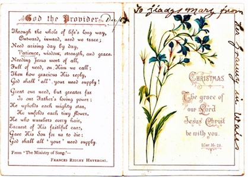

Francis Richard lewis

Francis’s father Samuel was an agricultural labourer in White Mill when Francis was born. Ten years later they had moved about 5 miles away to Cwrt y Gath, Llanarthney where Samuel was working as a cottage labourer and by 1871 he had become a farmer at Cwrt y Gath and remained there farming for the rest of his life.
Francis Lewis left Camarthenshire to work in London and met Rose Lewis in London. Rose was a saleswoman at a corset manufacturer’s. They lived close by and would have met in the course of their employment. Francis emigrated to Australia in 1882 and Rose was to follow after he had set up his business. He had a draper’s shop in Woollahra. Francis had organised the wedding and Rose and Francis married in 1884, 1 week after she arrived in Australia. This marriage was recorded in the family bible of Samuel and Mary Lewis in Wales and the Lewis family in Wales still have the bible.
They had 2 daughters Gladys Mary in 1885 and Doris Helena Rose in 1990. Their first child Gladys Mary died when she was 8 years old, 6 years before her father died.
It seems as though Francis took to the drink and died of the DT’s in 1899. He died 3 days after Christmas so it would have been a lonely Christmas for Rose and Doris.
What you should know
francis richard lewis
Francis Richard Lewis was born in 1850 in Whitemill Village near Abergwili in Wales and was baptised in Abergwili in that year. His parents were Samuel Lewis (ca. 1824-1890) and Mary Richards (ca. 1824-1901).
In the 1881 census he was working in London for Charles Meeking & Co. at 7-8 Holborn Circus. They were retail woollen draper’s and suppliers of tailor’s trimmings (mantle cloths, waterproof tweeds) which they imported from Scotland and Ireland.
He was a draper’s assistant. There were 86 men registered as living on the premises of his employer.
He emigrated to Sydney, Australia in 1882 and married Rose Brimble in Woollahra on the 9th June 1884. He owned a drapery shop in Woollahra.
Francis Lewis died at 310 Point Piper Road, Paddington at 49 years of age on the 28th Dec 1899 from delirium tremens. The informant of his death was a friend J Fordyll from Denison St., Woollahra. He was buried the next day at Waverley Cemetery, Sydney.
samuel lewis & mary richards
Samuel Lewis was born in Meidrim, Caramarthenshire in 1822. He was the son of Francis Lewis (1796 - ) and Amy John (1796 - ), both from Meidrim. He married Mary Richards in October 1847. He died in Llanarthney when he was 72 in December 1894.
Mary was the daughter of John Richards (1799-1830) from Llampumsaint and Amy Griffiths (1801 - ) also from Meidrim.
Mary was born in Abergwili in 1824. She died in Mar 1905 in Carmarthenshire.
What I think!

Christmas Card to Gladys Mary from her grandmother
Mary Richards from Abergwili, Wales
Abergwili, Wales